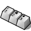

Pemetaan kunci (Keymap)
| Deskbar: | ||
| Lokasi: | /boot/system/preferences/Keymap | |
| Pengaturan: | ~/config/settings/Keymap/* - Lokasi keymaps yang dimodifikasi pengguna. ~/config/settings/Key_map |

Di sebelah kanan, jendela Keymap menampilkan representasi papan ketik Anda. Saat Anda menekan tombol, tombol yang sesuai menjadi gelap dan simbol yang ditetapkan dimasukkan ke dalam bidang teks Contoh dan Papan Klip di bagian bawah. Dari sana Anda juga dapat menyalin dan menempel itu menjadi dokumen.
Dengan demikian, preferensi Keymap tidak hanya untuk mengkonfigurasi keymap lokal Anda, tetapi juga berguna ketika mencari simbol khusus yang digunakan dalam bahasa lain. Misalnya, Anda dapat mengganti keymap ke "Prancis", cari "ç" dan salin ke surat Anda ke François. (Meskipun Anda akan menemukan "cedil" juga di tombol lain ...)
Menekan tombol pengubah seperti SHIFT, CONTROL atau OPTION akan mengubah keyboard yang ditampilkan.
Lalu ada tombol yang ditandai dengan latar belakang biru. Tombol-tombol ini disebut Tombol Mati yang dapat mengubah tombol yang Anda tekan setelah itu. Jika Anda mengklik tombol biru dengan mouse Anda, tombol yang dapat diubah menyala kuning. Klik lagi dan semuanya kembali normal. Contohnya adalah é, ñ, ó atau ë.
Di bawah representasi keyboard ada dua opsi lagi:
| mengatur tombol biru yang disebutkan di atas. | ||
| untuk menggunakan tombol pintas dalam mode Windows / Linux, mis. CONTROL (normalnyaCTRL) atau mode Haiku, mis COMMAND (normalnya ALT). |
Daftar di sebelah kiri menawarkan peta tombol yang tersedia yang sudah dikonfigurasikan sebelumnya dari sistem, dan di bawahnya, jika tersedia, peta yang ditentukan pengguna. Anda dapat mengubah keymap di representasi papan ketik: seret & lepas satu tombol pada yang lain dan mereka berpindah tempat.
Anda juga dapat membuat pemetaan individual dengan seret & lepas karakter dari aplikasi lain ke tombol. Misalnya, Anda dapat memperpanjang keymap reguler Anda dengan simbol mata uang yang sering digunakan. Cukup klik tombol CONTROLdan seret & lepas simbol pound dari CharacterMap ke tombol 'P' untuk mendapatkan ₤ saat Anda menekan CTRL P.
Dengan mengeklik kanan tombol normal, menu konteks menawarkan pemetaannya. Kunci pengubah dapat memiliki pemetaan alternatif, seperti menggunakan CAPS LOCK sebagai kunci CTRL :

Sebagai alternatif dari ini atau seret & lepas tombol , Ada menu yang akan memulai jendela ini:

Di sini, Anda dapat menetapkan kunci untuk peran mereka masing-masing atau bahkan sepenuhnya menonaktifkan peran kunci. Anda bahkan dapat menetapkan kunci yang sama untuk peran yang berbeda, meskipun itu bukan ide yang baik sebagian besar waktu dan Anda akan diperingatkan oleh kecil tanda seru di sebelah menu pop-up jika Anda melakukannya.
Menekan tombol menerapkan perubahan Anda dan menutup jendela.
Setelah selesai, Anda dapat menyimpan hasilnya dari menu . Pemetaan Anda yang dimodifikasi hanya akan muncul dalam daftar ditentukan-pengguna jika disimpan dalam ~/config/settings/Keymap/. Jika tidak, Anda akan memiliki untuk memuatnya secara manual melalui .
Untuk lebih mencocokkan panel Keymap dengan keyboard fisik Anda, ada beberapa pengaturan berbeda yang tersedia dari menu .
Font yang digunakan dalam representasi keyboard diatur dari menu . Perhatikan, font tersebut mungkin atau mungkin tidak mengandung semua simbol untuk keymap tertentu.
Terakhir, ada tombol untuk mengembalikan pengaturan yang aktif saat Anda memulai preferensi Keymap.
 Manipulasi keymap tingkat lanjut
Manipulasi keymap tingkat lanjut
Ada metode lain untuk menyesuaikan keymap Anda selain panel preferensi Keymap.Ini melibatkan pengeditan file teks yang berisi banyak nilai hex, yang mungkin tampak menakutkan pada pandangan pertama, tetapi tidak benar-benar tidak mungkin untuk dipahami.
Anda dapat mengekspor keymap saat ini dengan perintah di Terminal:
keymap -d > MyKeymap
File teks yang dihasilkan kemudian dapat dibuka di editor teks. Pastikan untuk menggunakan font tetap di editor itu atau Anda tidak akan pernah...
Di awal file itu, Anda akan menemukan legenda keyboard bergaya dengan nilai hex yang sesuai dengan masing-masing tombol. Di bawah ini adalah tugas sebenarnya dari setiap nilai. Anda dapat melakukan semua penyesuaian yang juga tersedia dari panel preferensi Keymap , dan kemudian beberapa. Jika Anda memiliki beberapa tombol khusus pada keyboard Anda, Anda mungkin dapat mengaktifkannya. Yaitu, gunakan sebagai tombol biasa atau seperti opsi atau tombol kontrol. Anda tidak akan bisa, karena misalnya, minta kunci multimedia Anda kurang/tambah volume atau mulai beberapa aplikasi. Untuk ini, Anda dapat menggunakan preferensi Pintasan.
Setelah selesai, Anda akan menyimpan file dan sistem Anda memuat keymap yang dimodifikasi dengan perintah ini:
keymap -s < MyKeymap
Jika Anda ingin mengimpor keymap ini ke panel Keymap, Anda harus mengompilasinya terlebih dahulu ke format biner:
keymap -c < MyKeymap
Ini akan menghasilkan file keymap.out yang dapat Anda muat ke Keymap melalui menu .... Omong-omong, perintah keymap dapat memuat format biner ini juga: keymap -l < keymap.out
Ini adalah file yang di-dump(ekspor) (tombol paling kanan dari papan ketik bergaya terpotong untuk tampilan yang lebih bagus pada halaman ini):
#!/bin/keymap -s
#
# Raw key numbering for 101 keyboard...
#
#
# [esc] [ f1] [ f2] [ f3] [ f4] [ f5] [ f6] [ f7] [ f8] [ f9] [f10] [f11] [f12]
# 0x01 0x02 0x03 0x04 0x05 0x06 0x07 0x08 0x09 0x0a 0x0b 0x0c 0x0d
#
# [ ` ] [ 1 ] [ 2 ] [ 3 ] [ 4 ] [ 5 ] [ 6 ] [ 7 ] [ 8 ] [ 9 ] [ 0 ] [ - ] [ = ] [bck]
# 0x11 0x12 0x13 0x14 0x15 0x16 0x17 0x18 0x19 0x1a 0x1b 0x1c 0x1d 0x1e
#
# [tab] [ q ] [ w ] [ e ] [ r ] [ t ] [ y ] [ u ] [ i ] [ o ] [ p ] [ [ ] [ ] ] [ \ ]
# 0x26 0x27 0x28 0x29 0x2a 0x2b 0x2c 0x2d 0x2e 0x2f 0x30 0x31 0x32 0x33
#
# [cap] [ a ] [ s ] [ d ] [ f ] [ g ] [ h ] [ j ] [ k ] [ l ] [ ; ] [ ' ] [ enter ]
# 0x3b 0x3c 0x3d 0x3e 0x3f 0x40 0x41 0x42 0x43 0x44 0x45 0x46 0x47
#
# [shift] [ z ] [ x ] [ c ] [ v ] [ b ] [ n ] [ m ] [ , ] [ . ] [ / ] [shift]
# 0x4b 0x4c 0x4d 0x4e 0x4f 0x50 0x51 0x52 0x53 0x54 0x55 0x56
#
# [ctr] [cmd] [ space ] [cmd] [ctr]
# 0x5c 0x5d 0x5e 0x5f 0x60
#
# NOTE: On a Microsoft Natural Keyboard:
# left option = 0x66
# right option = 0x67
# menu key = 0x68
# NOTE: On an Apple Extended Keyboard:
# left option = 0x66
# right option = 0x67
# keypad '=' = 0x6a
# power key = 0x6b
Version = 3
CapsLock = 0x3b
ScrollLock = 0x0f
NumLock = 0x22
LShift = 0x4b
RShift = 0x56
LCommand = 0x5d
RCommand = 0x60
LControl = 0x5c
RControl = 0x00
LOption = 0x66
ROption = 0x5f
Menu = 0x68
#
# Lock settings
# To set NumLock, do the following:
# LockSettings = NumLock
#
# To set everything, do the following:
# LockSettings = CapsLock NumLock ScrollLock
#
LockSettings =
# Legend:
# n = Normal
# s = Shift
# c = Control
# C = CapsLock
# o = Option
# Key n s c o os C Cs Co Cos
Key 0x00 = '' '' '' '' '' '' '' '' ''
Key 0x01 = 0x1b 0x1b 0x1b 0x1b 0x1b 0x1b 0x1b 0x1b 0x1b
Key 0x02 = 0x10 0x10 0x10 0x10 0x10 0x10 0x10 0x10 0x10
Key 0x03 = 0x10 0x10 0x10 0x10 0x10 0x10 0x10 0x10 0x10
Key 0x04 = 0x10 0x10 0x10 0x10 0x10 0x10 0x10 0x10 0x10
Key 0x05 = 0x10 0x10 0x10 0x10 0x10 0x10 0x10 0x10 0x10
Key 0x06 = 0x10 0x10 0x10 0x10 0x10 0x10 0x10 0x10 0x10
Key 0x07 = 0x10 0x10 0x10 0x10 0x10 0x10 0x10 0x10 0x10
Key 0x08 = 0x10 0x10 0x10 0x10 0x10 0x10 0x10 0x10 0x10
Key 0x09 = 0x10 0x10 0x10 0x10 0x10 0x10 0x10 0x10 0x10
Key 0x0a = 0x10 0x10 0x10 0x10 0x10 0x10 0x10 0x10 0x10
Key 0x0b = 0x10 0x10 0x10 0x10 0x10 0x10 0x10 0x10 0x10
Key 0x0c = 0x10 0x10 0x10 0x10 0x10 0x10 0x10 0x10 0x10
Key 0x0d = 0x10 0x10 0x10 0x10 0x10 0x10 0x10 0x10 0x10
Key 0x0e = 0x10 0x10 0x10 0x10 0x10 0x10 0x10 0x10 0x10
Key 0x0f = 0x10 0x10 0x10 0x10 0x10 0x10 0x10 0x10 0x10
Key 0x10 = 0x10 0x10 0x10 0x10 0x10 0x10 0x10 0x10 0x10
Key 0x11 = '^' 0xc2b0 '' ' ' '' '^' 0xc2b0 ' ' ''
Key 0x12 = '1' '!' '' ' ' '' '!' '1' ' ' ''
Key 0x13 = '2' '"' '' 0xc2b2 '' '"' '2' 0xc2b2 ''
Key 0x14 = '3' 0xc2a7 '' 0xc2b3 '' 0xc2a7 '3' 0xc2b3 ''
Key 0x15 = '4' '$' '' ' ' '' '$' '4' ' ' ''
Key 0x16 = '5' '%' '' ' ' '' '%' '5' ' ' ''
Key 0x17 = '6' '&' '' ' ' '' '&' '6' ' ' ''
Key 0x18 = '7' '/' '' '{' '' '/' '7' '{' ''
Key 0x19 = '8' '(' '' '[' '' '(' '8' '[' ''
Key 0x1a = '9' ')' '' ']' '' ')' '9' ']' ''
Key 0x1b = '0' '=' '' '}' '' '=' '0' '}' ''
Key 0x1c = 0xc39f '?' '' '\\' '' '?' 0xc39f '\\' ''
Key 0x1d = 0xc2b4 '`' '' ' ' '' 0xc2b4 '`' ' ' ''
Key 0x1e = 0x08 0x08 0x08 0x08 0x08 0x08 0x08 0x08 0x08
Key 0x1f = 0x05 0x05 0x05 0x05 0x05 0x05 0x05 0x05 0x05
Key 0x20 = 0x01 0x01 0x01 0x01 0x01 0x01 0x01 0x01 0x01
Key 0x21 = 0x0b 0x0b 0x0b 0x0b 0x0b 0x0b 0x0b 0x0b 0x0b
Key 0x22 = '' '' '' '' '' '' '' '' ''
Key 0x23 = '/' '/' '/' '/' '/' '/' '/' '/' '/'
Key 0x24 = '*' '*' '*' '*' '*' '*' '*' '*' '*'
Key 0x25 = '-' '-' '-' '-' '-' '-' '-' '-' '-'
Key 0x26 = 0x09 0x09 0x09 0x09 0x09 0x09 0x09 0x09 0x09
Key 0x27 = 'q' 'Q' 0x11 '@' '' 'Q' 'q' '@' ''
Key 0x28 = 'w' 'W' 0x17 ' ' '' 'W' 'w' ' ' ''
Key 0x29 = 'e' 'E' 0x05 0xe282ac '' 'E' 'e' 0xe282ac ''
Key 0x2a = 'r' 'R' 0x12 ' ' '' 'R' 'r' ' ' ''
Key 0x2b = 't' 'T' 0x14 ' ' '' 'T' 't' ' ' ''
Key 0x2c = 'z' 'Z' 0x1a ' ' '' 'Z' 'z' ' ' ''
Key 0x2d = 'u' 'U' 0x15 ' ' '' 'U' 'u' ' ' ''
Key 0x2e = 'i' 'I' 0x09 ' ' '' 'I' 'i' ' ' ''
Key 0x2f = 'o' 'O' 0x0f ' ' '' 'O' 'o' ' ' ''
Key 0x30 = 'p' 'P' 0x10 ' ' '' 'P' 'p' ' ' ''
Key 0x31 = 0xc3bc 0xc39c 0x1b ' ' '' 0xc39c 0xc3bc ' ' ''
Key 0x32 = ' ' '*' 0x1d '~' '' '*' ' ' '~' ''
Key 0x33 = '#' '\'' 0x1c ' ' '' '\'' '#' ' ' ''
Key 0x34 = 0x7f 0x7f 0x7f 0x7f 0x7f 0x7f 0x7f 0x7f 0x7f
Key 0x35 = 0x04 0x04 0x04 0x04 0x04 0x04 0x04 0x04 0x04
Key 0x36 = 0x0c 0x0c 0x0c 0x0c 0x0c 0x0c 0x0c 0x0c 0x0c
Key 0x37 = 0x01 '7' 0x01 0x01 '7' 0x01 '7' 0x01 '7'
Key 0x38 = 0x1e '8' 0x1e 0x1e '8' 0x1e '8' 0x1e '8'
Key 0x39 = 0x0b '9' 0x0b 0x0b '9' 0x0b '9' 0x0b '9'
Key 0x3a = ' ' ' ' ' ' ' ' ' ' ' ' ' ' ' ' ' '
Key 0x3b = '' '' '' '' '' '' '' '' ''
Key 0x3c = 'a' 'A' 0x01 ' ' '' 'A' 'a' ' ' ''
Key 0x3d = 's' 'S' 0x13 ' ' '' 'S' 's' ' ' ''
Key 0x3e = 'd' 'D' 0x04 ' ' '' 'D' 'd' ' ' ''
Key 0x3f = 'f' 'F' 0x06 ' ' '' 'F' 'f' ' ' ''
Key 0x40 = 'g' 'G' 0x07 ' ' '' 'G' 'g' ' ' ''
Key 0x41 = 'h' 'H' 0x08 ' ' '' 'H' 'h' ' ' ''
Key 0x42 = 'j' 'J' 0x0a ' ' '' 'J' 'j' ' ' ''
Key 0x43 = 'k' 'K' 0x0b ' ' '' 'K' 'k' ' ' ''
Key 0x44 = 'l' 'L' 0x0c ' ' '' 'L' 'l' ' ' ''
Key 0x45 = 0xc3b6 0xc396 '' ' ' '' 0xc396 0xc3b6 ' ' ''
Key 0x46 = 0xc3a4 0xc384 '' ' ' '' 0xc384 0xc3a4 ' ' ''
Key 0x47 = 0x0a 0x0a 0x0a 0x0a 0x0a 0x0a 0x0a 0x0a 0x0a
Key 0x48 = 0x1c '4' 0x1c 0x1c '4' 0x1c '4' 0x1c '4'
Key 0x49 = '' '5' '' '' '5' '' '5' '' '5'
Key 0x4a = 0x1d '6' 0x1d 0x1d '6' 0x1d '6' 0x1d '6'
Key 0x4b = '' '' '' '' '' '' '' '' ''
Key 0x4c = 'y' 'Y' 0x19 ' ' '' 'Y' 'y' ' ' ''
Key 0x4d = 'x' 'X' 0x18 ' ' '' 'X' 'x' ' ' ''
Key 0x4e = 'c' 'C' 0x03 ' ' '' 'C' 'c' ' ' ''
Key 0x4f = 'v' 'V' 0x16 ' ' '' 'V' 'v' ' ' ''
Key 0x50 = 'b' 'B' 0x02 ' ' '' 'B' 'b' ' ' ''
Key 0x51 = 'n' 'N' 0x0e ' ' '' 'N' 'n' ' ' ''
Key 0x52 = 'm' 'M' 0x0d 0xc2b5 '' 'M' 'm' 0xc2b5 ''
Key 0x53 = ',' ';' ',' ' ' '' ';' ',' ' ' ''
Key 0x54 = '.' ':' '.' ' ' '' ':' '.' ' ' ''
Key 0x55 = '-' '_' '' ' ' '' '-' '_' ' ' ''
Key 0x56 = '' '' '' '' '' '' '' '' ''
Key 0x57 = 0x1e 0x1e 0x1e 0x1e 0x1e 0x1e 0x1e 0x1e 0x1e
Key 0x58 = 0x04 '1' 0x04 0x04 '1' 0x04 '1' 0x04 '1'
Key 0x59 = 0x1f '2' 0x1f 0x1f '2' 0x1f '2' 0x1f '2'
Key 0x5a = 0x0c '3' 0x0c 0x0c '3' 0x0c '3' 0x0c '3'
Key 0x5b = 0x0a 0x0a 0x0a 0x0a 0x0a 0x0a 0x0a 0x0a 0x0a
Key 0x5c = '' '' '' '' '' '' '' '' ''
Key 0x5d = '' '' '' '' '' '' '' '' ''
Key 0x5e = ' ' ' ' 0x00 ' ' ' ' ' ' ' ' ' ' ' '
Key 0x5f = '' '' '' '' '' '' '' '' ''
Key 0x60 = '' '' '' '' '' '' '' '' ''
Key 0x61 = 0x1c 0x1c 0x1c 0x1c 0x1c 0x1c 0x1c 0x1c 0x1c
Key 0x62 = 0x1f 0x1f 0x1f 0x1f 0x1f 0x1f 0x1f 0x1f 0x1f
Key 0x63 = 0x1d 0x1d 0x1d 0x1d 0x1d 0x1d 0x1d 0x1d 0x1d
Key 0x64 = 0x05 '0' 0x05 0x05 '0' 0x05 '0' 0x05 '0'
Key 0x65 = 0x7f ',' 0x7f 0x7f ',' 0x7f ',' 0x7f ','
Key 0x66 = '' '' '' '' '' '' '' '' ''
Key 0x67 = '' '' '' '' '' '' '' '' ''
Key 0x68 = '' '' '' '' '' '' '' '' ''
Key 0x69 = '<' '>' '' '|' '' '<' '>' '|' ''
Key 0x6a = '' '' '' '' '' '' '' '' ''
Key 0x6b = '' '' '' '' '' '' '' '' ''
Key 0x6c = '' '' '' '' '' '' '' '' ''
Key 0x6d = '' '' '' '' '' '' '' '' ''
Key 0x6e = '' '' '' '' '' '' '' '' ''
Key 0x6f = '' '' '' '' '' '' '' '' ''
Key 0x70 = '' '' '' '' '' '' '' '' ''
Key 0x71 = '' '' '' '' '' '' '' '' ''
Key 0x72 = '' '' '' '' '' '' '' '' ''
Key 0x73 = '' '' '' '' '' '' '' '' ''
Key 0x74 = '' '' '' '' '' '' '' '' ''
Key 0x75 = '' '' '' '' '' '' '' '' ''
Key 0x76 = '' '' '' '' '' '' '' '' ''
Key 0x77 = '' '' '' '' '' '' '' '' ''
Key 0x78 = '' '' '' '' '' '' '' '' ''
Key 0x79 = '' '' '' '' '' '' '' '' ''
Key 0x7a = '' '' '' '' '' '' '' '' ''
Key 0x7b = '' '' '' '' '' '' '' '' ''
Key 0x7c = '' '' '' '' '' '' '' '' ''
Key 0x7d = '' '' '' '' '' '' '' '' ''
Key 0x7e = '' '' '' '' '' '' '' '' ''
Key 0x7f = '' '' '' '' '' '' '' '' ''
Acute ' ' = 0xc2b4
Acute 'A' = 0xc381
Acute 'E' = 0xc389
Acute 'I' = 0xc38d
Acute 'O' = 0xc393
Acute 'U' = 0xc39a
Acute 'Y' = 0xc39d
Acute 'a' = 0xc3a1
Acute 'e' = 0xc3a9
Acute 'i' = 0xc3ad
Acute 'o' = 0xc3b3
Acute 'u' = 0xc3ba
Acute 'y' = 0xc3bd
Acute '' = ''
Acute '' = ''
Acute '' = ''
AcuteTab = Normal Shift Option Option-Shift CapsLock CapsLock-Shift CapsLock-Option CapsLock-Option-Shift
Grave ' ' = '`'
Grave 'A' = 0xc380
Grave 'E' = 0xc388
Grave 'I' = 0xc38c
Grave 'O' = 0xc392
Grave 'U' = 0xc399
Grave 'a' = 0xc3a0
Grave 'e' = 0xc3a8
Grave 'i' = 0xc3ac
Grave 'o' = 0xc3b2
Grave 'u' = 0xc3b9
Grave '' = ''
Grave '' = ''
Grave '' = ''
Grave '' = ''
Grave '' = ''
GraveTab = Normal Shift Option Option-Shift CapsLock CapsLock-Shift CapsLock-Option CapsLock-Option-Shift
Circumflex ' ' = '^'
Circumflex 'A' = 0xc382
Circumflex 'E' = 0xc38a
Circumflex 'I' = 0xc38e
Circumflex 'O' = 0xc394
Circumflex 'U' = 0xc39b
Circumflex 'a' = 0xc3a2
Circumflex 'e' = 0xc3aa
Circumflex 'i' = 0xc3ae
Circumflex 'o' = 0xc3b4
Circumflex 'u' = 0xc3bb
Circumflex '' = ''
Circumflex '' = ''
Circumflex '' = ''
Circumflex '' = ''
Circumflex '' = ''
CircumflexTab = Normal Shift Option Option-Shift CapsLock CapsLock-Shift CapsLock-Option CapsLock-Option-Shift
Diaeresis ' ' = 0xc2a8
Diaeresis 'A' = 0xc384
Diaeresis 'E' = 0xc38b
Diaeresis 'I' = 0xc38f
Diaeresis 'O' = 0xc396
Diaeresis 'U' = 0xc39c
Diaeresis 'Y' = 0xc5b8
Diaeresis 'a' = 0xc3a4
Diaeresis 'e' = 0xc3ab
Diaeresis 'i' = 0xc3af
Diaeresis 'o' = 0xc3b6
Diaeresis 'u' = 0xc3bc
Diaeresis 'y' = 0xc3bf
Diaeresis '' = ''
Diaeresis '' = ''
Diaeresis '' = ''
DiaeresisTab = Normal Shift Option Option-Shift CapsLock CapsLock-Shift CapsLock-Option CapsLock-Option-Shift
Tilde ' ' = '~'
Tilde 'A' = 0xc383
Tilde 'O' = 0xc395
Tilde 'N' = 0xc391
Tilde 'a' = 0xc3a3
Tilde 'o' = 0xc3b5
Tilde 'n' = 0xc3b1
Tilde '' = ''
Tilde '' = ''
Tilde '' = ''
Tilde '' = ''
Tilde '' = ''
Tilde '' = ''
Tilde '' = ''
Tilde '' = ''
Tilde '' = ''
TildeTab = Normal Shift Option Option-Shift CapsLock CapsLock-Shift CapsLock-Option CapsLock-Option-Shift